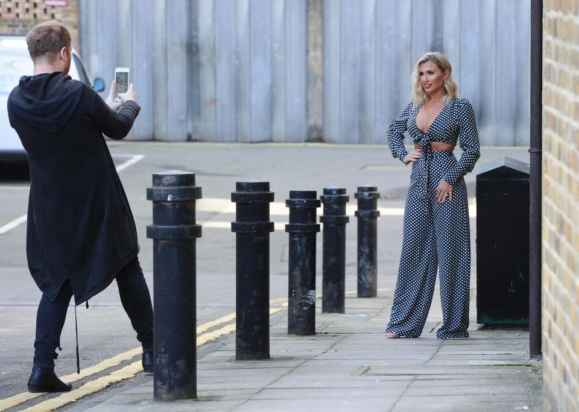
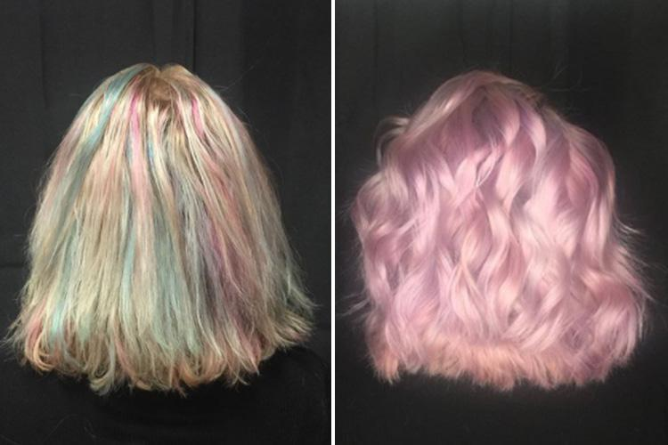

Latest News
POLITICS
SMEAR FEAR Gavin Williamson denies leaking state secrets to distract from affair as allies claim rumour was spread by political enemies.
Secretary insisted he did not release classified information.The Defence Secretary insisted he did not release classified information.Gavin Williamson has denied leaking state secrets to distract from news he had a fling with a colleague.
Secretary insisted he did not release classified information.The Defence Secretary insisted he did not release classified information.Gavin Williamson has denied leaking state secrets to distract from news he had a fling with a colleague.
'LITTLE DONALD' Who is Barron Trump? Donald Trump’s youngest son and ‘First Boy of America’ who lives in the White House.Dubbed 'little Donald' by his mum the youngster is already bilingual
THE SUN SAYS Chancellor Philip Hammond is the enemy of Brexit who wants to betray the Leave vote The fact that the Chancellor is revelling in his praise just shows how much of a roadblock he is to our progress
GOOD MORNING SUSANNA Susanna Reid reveals how Piers Morgan has changed her for the better.
The ITV presenter talks feminism, bickering with Piers and why she hasn't made any New Year's resolutions.On Susanna’s debut Fabulous photo shoot back in November 2013, the then BBC Breakfast presenter and Strictly Come Dancing contestant was – how should we put this? – a touch on edge.
Secretary insisted he did not release classified information.The Defence Secretary insisted he did not release classified information.Gavin Williamson has denied leaking state secrets to distract from news he had a fling with a colleague.
DOTTY ABOUT STYLE Billie Faiers models her new clothing range in flirty polkadot playsuit Former TOWIE star showed off her incredible curves in a 70s style polka jumpsuit as she shoots new clothing range.
THE MANE ATTRACTION Opal hair is 2018’s latest edgy beauty trend… so are YOU brave enough to try it? If you're sick of the rainbow madness of unicorn hair, you'll love its subtle little sister. This is before-and-after shot illustrates
Last in Sport
'HE'S ENGAGING' Conor McGregor says Floyd Mayweather should do MMA after he tried boxing – and claims he’ll regret it if he doesn’t.
McGregor says 50-0 boxer is flirting with switch and should follow in his footsteps and make the move
Chicago - min -4.0 °C, max 3.5 °C, wind 30 km/h
Bristol - min -8.0 °C, max 1 °C, wind 35 km/h
Lydney - min -5.0 °C, max 7°C, wind 25 km/h
Oxford - min -4.0 °C, max 1 °C, wind 23 km/h
Didcot - min -7.0 °C, max 2.5 °C, wind 20 km/h
Farington - min -3.0 °C, max 5 °C, wind 21 km/h